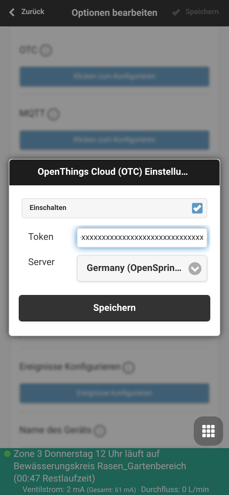

Neue Funktionen: Konfigurierbare OTC- und Cloud-Sync-Server
Mit dem neuesten Update der OpenSprinkler App (Version 2.4.227) und Firmware (2.4.0 (227)) führen wir eine stark gewünschte Funktion ein: Konfigurierbare OpenThings Cloud (OTC) Server.
Bisher war die Verbindung zur Cloud auf bestimmte Standard-Server festgelegt. Mit dem neuen Update haben Sie nun die volle Kontrolle darüber, über welchen Server Ihr Controller synchronisiert und aus der Ferne gesteuert wird.
Was ist neu?
1. Freie Server-Auswahl über Voreinstellungen (Presets)
Um die Einrichtung so einfach wie möglich zu gestalten, bietet die Benutzeroberfläche nun ein praktisches Dropdown-Menü. Über dieses können Sie bequem aus einer Liste bekannter, vordefinierter OTC-Server wählen (z.B. den Standard-Server io.opensprinklershop.de).
2. Eigene (Custom) Server
Sie betreiben eine eigene OpenThings Cloud oder einen privaten Sync-Server? Kein Problem! Wählen Sie einfach die Option für einen eigenen Server ("Custom") aus und tragen Sie die gewünschte Adresse sowie den dazugehörigen Port ein.
3. Verbesserte Sicherheit und Verbindungsqualität
Die App nutzt nun für Cloud- und OTC-Verbindungen standardmäßig sichere TLS-Verbindungen (Port 443), sofern der Server dies unterstützt. Außerdem wurden Weiterleitungslogik und Stabilität bei Fernzugriffen optimiert.
Wie richte ich den OTC-Server ein?
Die Einstellungen finden Sie in der OpenSprinkler App unter: Optionen ➔ Erweitert ➔ OpenThings Cloud (OTC)
- Setzen Sie ein Häkchen bei Aktivieren (Enable).
- Geben Sie Ihren 32-stelligen Token ein.
- Wählen Sie unter Server Ihren gewünschten Anbieter aus dem Menü oder tragen Sie unter "Custom" eine eigene Adresse ein.
- Speichern Sie die Einstellungen und starten Sie den Controller ggf. neu, damit die neue Verbindung aufgebaut wird.
(Hinweis: Im nachfolgenden Bildschirmfoto wurde der Token aus Sicherheitsgründen unkenntlich gemacht).

Technische Voraussetzungen
- OpenSprinkler App: Mindestens Version 2.4.227
- Firmware: OpenSprinkler Firmware 2.4.0 (Build 227) oder neuer
Wir hoffen, dass diese Neuerungen Ihnen noch mehr Flexibilität bei der Verwaltung Ihrer Bewässerungssysteme bieten! Wie immer freuen wir uns über Ihr Feedback.